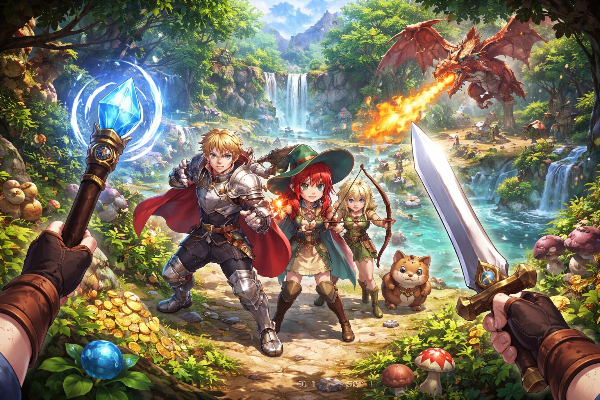
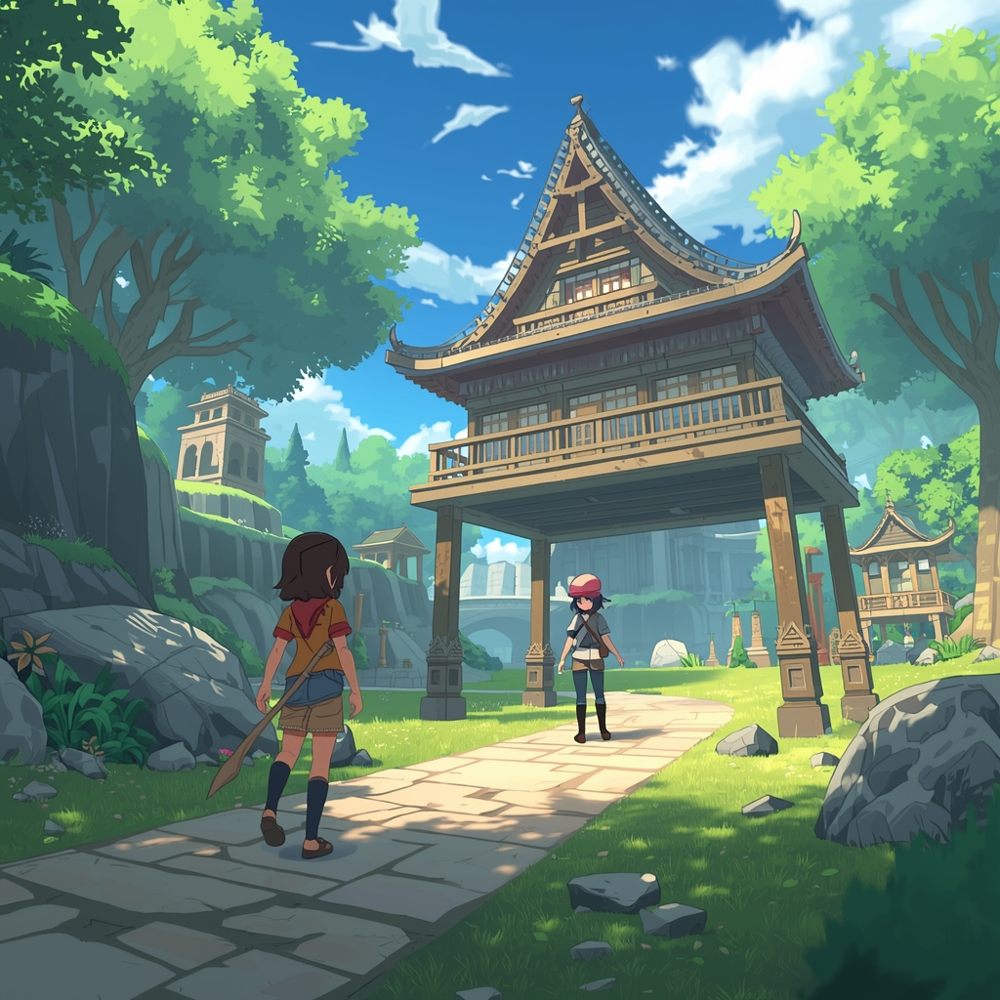
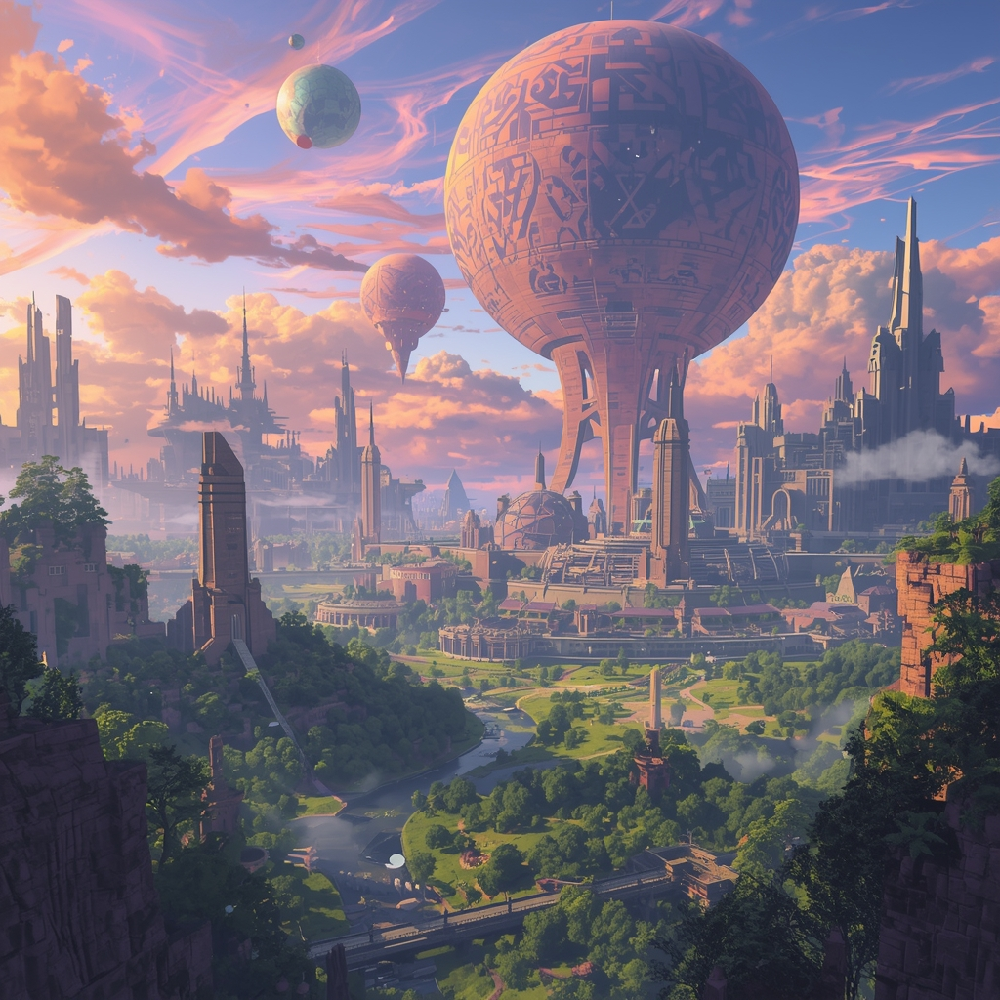

Description: An example of a third person world. Full of survival, battles, challenges and reward. Continue the path if you have the guts.

Description: Beautiful starting view of nature and a simple cottage. Living a simple life of survival yet peace from the scary world.

Description: The goal here is be the one at the top. Fighting through multiple dungeons where people have disappeared but one has never given up. Only one simple man has reached it, can you?

Description: A magical world with many birds and red blooming trees shining under a full moon. The breeze creeping up on two fellow mages, one teacher and one student. What will they stumble upon next?

Description: A stop motion inspired art. Three wanderers exploring vast buildings. Escaping evil, finding the end of hope. Can they make it together?

Description: A group of six players reaching into the demon king’s lair. The heat will not stop them. They are ready for death or victory.

Description: A detailed world where a group of three and their dog are running from a fire-breathing dragon. Can you help them escape?

Description: A beautiful nature background with a Japanese-style dojo. A single woman in pink stands peacefully with a cheerful attitude.

Description: Inspired by a Pokémon-like style. Buildings surrounded by water with two characters facing each other, ready to battle.

Description: A sunset over a utopian world with floating buildings. Nature blends with architecture, creating a mysterious and beautiful scene.